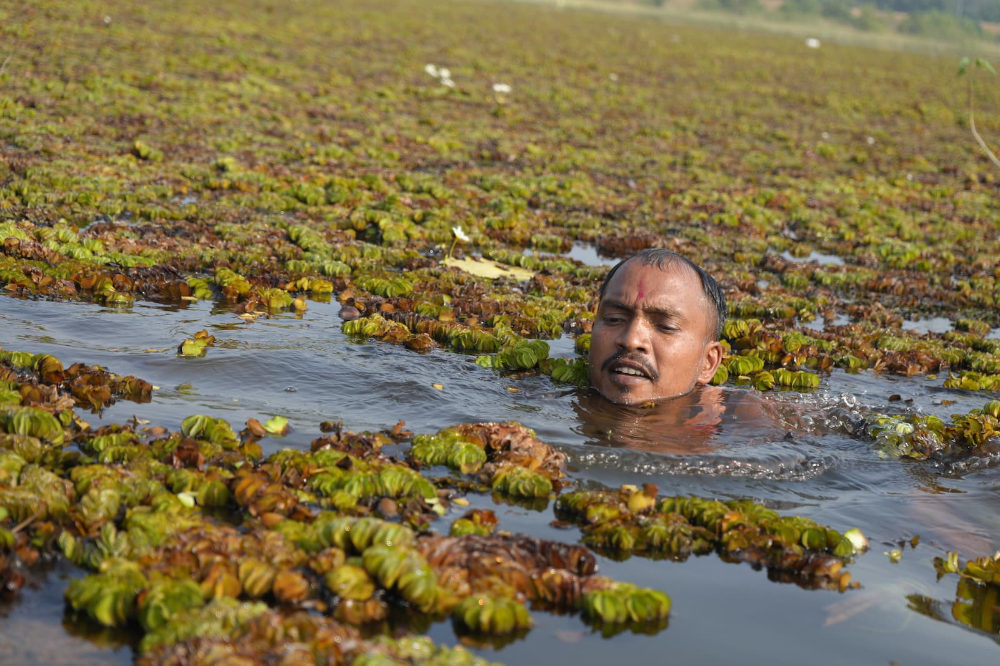
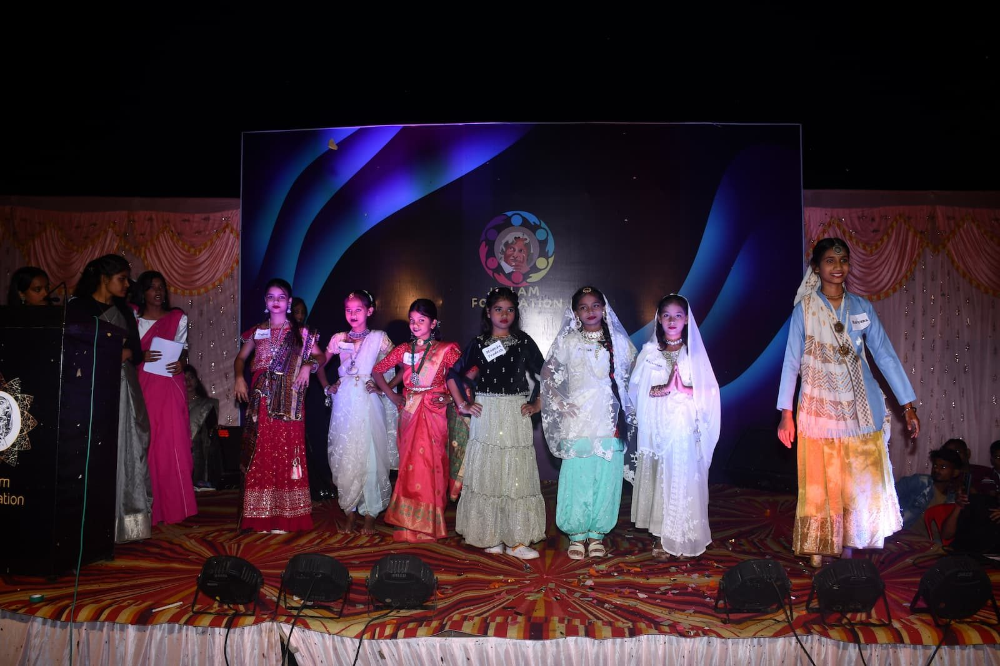

Khitoli Water Dam Cleanliness Drive: 15–25 October 2026
Six days of cleaning the Khitoli Water Dam and its surroundings. Everyone is welcome to join.
Read more →
Our new website is live
Kalam Foundation now has its own website — with our story, programs, events, photos and a simple way to volunteer.
Read more →Be part of a better tomorrow
Join as a volunteer, partner with us, or help spread the word.